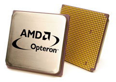
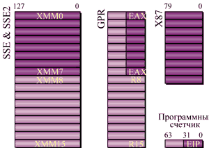
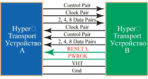
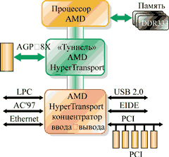
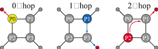
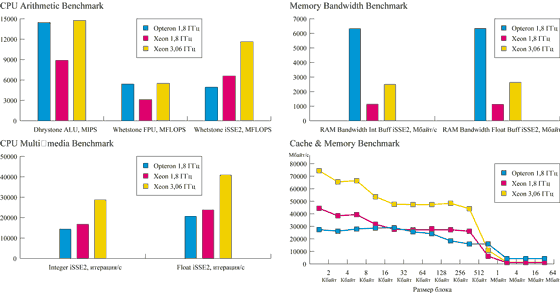

Игорь Колбин
Весной этого года корпорация AMD (http://www.amd.com) представила долгожданный процессор восьмого поколения Opteron. Он стал первым в мире 64-разрядным процессором, совместимым со стандартной архитектурой x86. Процессор AMD Opteron для серверов и рабочих станций использует набор инструкций x86, расширенный в расчете на поддержку 64-разрядных вычислений. По мнению разработчиков, технология AMD64 развивает стандартную архитектуру x86 и позволяет разработать единую инфраструктуру 64-разрядной вычислительной обработки, полностью совместимую с традиционным набором команд x86. Считается, что c появлением процессора AMD Opteron устраняются последние барьеры на пути развития 64-разрядной технологии. В частности, благодаря этому может упроститься переход на ПО нового поколения.
Как полагают в компании AMD, новая технология также обеспечивает защиту инвестиций клиентов, которые благодаря ей смогут по-прежнему пользоваться всеми своими 32-разрядными программными продуктами до тех пор, пока не решат развертывать новое, 64-разрядное ПО. Поскольку новые программы смогут работать параллельно со старыми, компьютерные системы, основанные на технологии AMD64, послужат фундаментом для создания первой в отрасли объединенной инфраструктуры 32- и 64-разрядных ИТ.
Сразу после официального объявления в тестах TPC-C, считающихся наиболее важными для серверов, процессор AMD Opteron достиг уровня производительности на 14% выше, чем конкурирующие с ним 32-разрядные серверные процессоры. В пакете тестов SPECweb99, проверяющих производительность доступа в Интернет, процессор AMD Opteron модели 844 впервые в мире превысил рекордную планку 10 000.
Весной был начат выпуск процессоров AMD Opteron (рис. 1) моделей 240, 242 и 244 для однопроцессорных и двухпроцессорных серверов. Позже будет объявлено о начале производства процессоров AMD Opteron серии 800 для серверов, использующих до восьми процессоров. Ожидается, что поставки процессоров AMD Opteron серии 100 (для однопроцессорных серверов) будут начаты в III квартале текущего года.
|  | Рис. 1. Процессор Opteron.
|
Коротко об OpteronЭто первый представитель нового, восьмого поколения процессоров AMD, знаменующего собой эру перехода с 32-разрядных вычислений на 64-разрядные. Процессор Opteron первым в мире обеспечил возможность работы с 64-разрядными ОС и приложениями, одновременно сохраняя высокую производительность при работе с 32-разрядными x86-программами. Отметим основные особенности Opteron. В архитектуре нового процессора имеются 12-ступенчатый конвейер для целочисленных вычислений и 17-ступенчатый для операций с плавающей точкой. Полностью виртуальное 64-разрядное адресное пространство (52 разряда физической памяти) теоретически позволяет получить доступ к 4,5 Тбайт памяти. Регистры общего назначения имеют разрядность 64 бит. Для кэш-памяти инструкций и данных 1-го уровня (L1) отведено по 64 Кбайт, объем кэш-памяти 2-го уровня (L2) - 1 Мбайт. Встроенный двухканальный контроллер памяти DDR (PC2700), позволяющий обойтись без "северного моста" набора микросхем, работает на частоте процессора и снимает ограничения по пропускной способности, связанные с фронтальной шиной FSB. Три встроенных канала шины HyperTransport обеспечивают совокупную пропускную способность до 19,2 Гбайт/с.
Процессор выполнен с соблюдением проектных норм 0,13 мкм и с использованием технологии "кремний на изоляторе" (SOI). Микросхема содержит 105,9 млн транзисторов, реализованных на площади кристалла 193 мм2. Максимальная рассеиваемая мощность не превышает 89 Вт. Кристалл процессора помещен в корпус типа mPGA с числом контактов 940. |
Основы архитектуры x86-64
Известно, что достаточно долгое время архитектура х86 не претерпевала никаких принципиальных изменений. Собственно, ключевые особенности адресации команд, сегментации памяти, да и сами х86 команды не менялись со времен микросхем типа i386. Часто говорят, что это был последний революционный процессор. Теперь же усилиями AMD впервые со времен i386 архитектура х86 подверглась полноценному расширению.
Хороша архитектура х86 или нет, но именно она до сих пор доминирует по количеству как инсталлированных систем, так и существующего ПО.
Попробуем разобраться, как реализуется 64-разрядность в Opteron. Дело в том, что в этом процессоре к имеющейся системе регистров добавлено несколько новых регистров, а существующие просто расширены (рис. 2). Так, регистры общего назначения дополнены еще восемью регистрами R8-R15, используемыми в 64-разрядном режиме (т. е. для их использования потребуется перекомпиляция программ), а существующие EAX, EBX и т. п. расширены с 32 до 64 разрядов. Кроме того, в блок SSE добавлено восемь новых 128-разрядных XMM-регистров, что не только обеспечивает поддержку команд SSE2, но и улучшает обработку мультимедиа. Вообще говоря, увеличение количества регистров призвано повысить производительность ресурсоемких приложений, например, в программах научных расчетов.
|  | Рис. 2. Расширенный файл регистров.
|
Для реализации одновременной работы как с 32-разрядным, так и с 64-разрядным кодом и регистрами архитектура AMD64 предполагает, что процессор поддерживает два режима: так называемый "длинный" режим (Long mode), который включает в себя два подрежима - "истинно" 64-разрядный и режим совместимости (Compatibility mode), а также наследуемый режим (Legacy mode).
Для чего понадобились два дополнительных подрежима для 64-разрядного режима? Оказывается, все очень просто. При работе с 32-разрядной ОС задействовать 64-разрядный режим в полном объеме нет никакого смысла. Но как только осуществлен переход на "настоящую" 64-разрядную ОС, возникает альтернатива. Можно использовать "старое", 32-разрядное ПО (и тогда нужен режим совместимости), а можно - новое, 64-разрядное. Кроме того, разработчики говорят, что переключения "частных" режимов Long mode происходят весьма быстро, в отличие от переключения режимов работы процессора. Таким образом, введение таких режимов становится вполне целесообразным.
Compatibility mode обеспечивает двоичную совместимость с существующими 16- и 32-разрядными приложениями при работе с 64-разрядной ОС. Режим совместимости разрешается ОС по принципу отдельных кодовых сегментов. Однако, в отличие от 64-разрядного режима, сегментация функционирует обычным образом, используя семантику защищенного режима. С точки зрения выполняемого приложения процессор выглядит как обычный x86-кристалл в защищенном режиме (Protected mode). Однако с точки зрения ОС трансляция адресов, работа с прерываниями и исключениями, а также системные структуры данных используют механизмы 64-разрядного Long mode.
В дополнение к Long mode новая архитектура предполагает поддержку наследуемого режима, обеспечивающего двоичную совместимость с 16- и 32-разрядными ОС. Иначе говоря, в Legacy mode процессор уподобляется обычному 32-разрядному кристаллу x86. В этом режиме не задействуется ни одна из 64-разрядных функций, а процессор работает как стандартный x86. Этот режим обеспечивает полную совместимость с существующими 32-разрядными реализациями x86-архитектуры, в частности, включает поддержку сегментированной памяти и 32-разрядных регистров общего назначения и указателя инструкций.
Стоит отметить, что полностью все возможности Opteron задействуются именно в 64-разрядном режиме Long mode, т. е. при работе с 64-разрядными ОС.
Ядро процессора
Кэш-память инструкций (I-cache) по сравнению с Athlon не слишком изменился - он так и остался 2-канальным частично-ассоциативным, и объем его по-прежнему 64 Кбайт. Размер блока равен 64 байт. Имеются два набора тэгов - fetch port (порт выборки) и snoop (слежения). Содержимое памяти защищается при помощи проверки четности.
Кэш-память данных (D-cache) тоже 2-канальная частично-ассоциативная. В текущей модификации поддерживается 40-разрядный физический и 48-разрядный линейный адрес. Размер блока данных также составляет 64 байт. Из нововведений стоит отметить протокол работы кэш-памяти MOESI (Modified, Owned, Exclusive, Shared, Invalid), который ранее использовался в наборе микросхем AMD760 MPX. Отметим, что реализация протокола MOESI более трудоемка, чем, например, MESI, и требует включения в процессор большего количества транзисторов. Однако, по мнению специалистов, такой протокол прекрасно работает и действительно повышает эффективность работы шины.
Вообще говоря, AMD64 как раз меньше нуждается в кэш-памяти, нежели другие х86-архитектуры. Напомним, что кэш-память нужна из-за того, что скорость работы процессоров растет намного быстрее, нежели скорость памяти, и задержки при обращении в память сводят на нет все преимущества от скоростного процессора, ибо большую часть времени тот просто ждет. Именно поэтому и наращивают кэш-память в процессорах - чтобы сгладить этот эффект и дать процессору возможность продолжать работу над предварительно запасенными данными. Однако, по мнению разработчиков, ключевая особенность архитектуры AMD64 как раз и состоит в намного меньших задержках памяти по сравнению со всеми остальными архитектурами.
Что касается размера буфера быстрого преобразования адреса TLB (Translation Look-aside Buffers), то, в отличие от кэш-памяти 1-го уровня, TLB для кэш-памяти 2-го уровня поддерживает только страницы в 4К. При этом обеспечивается уже 512 входов с 4-канальной ассоциативностью. Вообще говоря, задача TLB заключается в кэшировании транслируемых физических адресов памяти. Процесс трансляции необходим процессору при обращении к любым данным, хранящимся в основной памяти, а потому кэширование адресов существенно сокращает время с момента запроса данных процессором до момента их получения. Дело в том, что в момент обращения к оперативной памяти процессор обращается не к физическому адресу ячейки, а к виртуальному (естественно, между ними есть строгое соответствие). Эти преобразованные адреса и размещаются в TLB, причем отдельно для инструкций и данных. Если процессор не найдет нужный ему адрес, придется заняться его вычислением. Учитывая немалое количество адресов в большинстве случаев, подобные операции вполне могут заметно притормозить процессор. Понятно, что расширение TLB самым положительным образом сказывается на производительности. Обычно в TLB кэш-памяти команд и TLB кэш-памяти данных 2-го уровня используется так называемая специальная exclusive-архитектура. Кроме того, строки TLB поддерживают опережающую загрузку.
Увеличение числа строк в TLB кэш-памяти данных повышает вероятность успешного попадания в буфер (вероятность нахождения нужного адреса). Особенность архитектуры заключается в том, что записи TLB кэш-памяти 1-го уровня не дублируются в TLB кэш-памяти 2-го уровня. Таким образом, в последнем экономятся строки, благодаря чему этот буфер может кэшировать больше адресов.
Интегрированный контроллер памяти
Одно из главных новшеств архитектуры AMD64 - интегрированный в процессор контроллер памяти. Основное преимущество встроенного контроллера памяти по сравнению с обычным, располагающимся в "северном мосте" набора микросхем, состоит в том, что контроллер памяти будет работать на частоте процессора, а следовательно, обладать низкой латентностью. Причем эта латентность будет тем меньше, чем на большей частоте будет работать процессор.
Контроллер памяти Opteron может работать с DDR-памятью стандарта PC1600/2100/2700 и использовать ширину шины 128 разрядов. В принципе допускается использование как одного, так и двух каналов памяти. Кроме того, вполне логично выглядит то, что встроенный контроллер поддерживает память с обнаружением и коррекцией ошибок ECC.
Ключевая технология - HyperTransport
Одна из ключевых инноваций нового процессора - это, несомненно, технология HyperTransport. Она применяется не только для связи процессора и набора логики, но и для связи различных частей набора микросхем, разработанного AMD для Opteron, а также для связи между процессорами при построении многопроцессорных систем посредством встроенных в процессор дополнительных контроллеров HyperTransport.
Вообще говоря, технология межсоединений HyperTransport (рис. 3) представляет собой высокоскоростную, высокопроизводительную связь "точка-точка" для интегральных схем. Считается, что она позволяет процессам в высокопроизводительных компьютерах, сетевых и коммуникационных устройствах взаимодействовать друг с другом быстрее, чем существующие на данный момент технологии. Пропускная способность технологии HyperTransport, равная 12,8 Гбайт/с, может обеспечить 48-кратное увеличение скорости передачи данных по сравнению с ранее созданными системными межсоединениями, которые, как правило, поддерживают пропускную способность на уровне 266 Мбайт/с (PCI).
|  | Рис. 3. Межсоединение HyperTransport.
|
Не секрет, что в системе есть по меньшей мере несколько областей, для которых технология HyperTransport позволяет избавиться от эффекта "бутылочного горлышка". Так, для оптимальной работы фронтальная шина процессора должна увеличивать пропускную способность с ростом тактовой частоты. Благодаря замене традиционной шины процессора на HyperTransport пропускная способность существенно увеличивается. Если процессору требуются данные, отсутствующие в его кэш-памяти, ему приходится посылать запрос в системную память. В традиционной архитектуре, когда контроллер оперативной памяти интегрирован в "северный мост" набора логики, запрос будет обрабатываться последним, что повлечет за собой дополнительные задержки и увеличит латентность, которая, в свою очередь, снижает производительность системы в целом.
Как уже отмечалось, для решения данной проблемы AMD интегрировала контроллер памяти непосредственно в процессоры семейства Opteron. Прямой доступ к памяти может заметно понизить латентность и увеличить практическую пропускную способность. Разумеется, что увеличение скорости одного из компонентов сказывается на производительности всего компьютера.
В настоящее время пропускная способность интерфейса, соединяющего "северный мост" системы с контроллером ввода-вывода ("южным мостом"), обычно составляет от 266 Мбайт/с до 1 Гбайт/с. Конечно, данные параметры приемлемы для среднестатистического настольного ПК, однако для производительных компьютеров, рабочих станций и серверов такая полоса пропускания может оказаться слишком низкой. К тому же с каждым днем ситуация все более обостряется: производители начинают использовать PCI-X, Gigabit Ethernet, USB 2.0 и другие стандарты, требующие большей скорости передачи данных. Благодаря внедрению HyperTransport в межкомпонентные связи наборов микросхем скорость передачи данных между мостами становится более высокой, что означает повышение общего стандарта производительности.
Вообще говоря, архитектура систем, построенных с применением технологии HyperTransport (рис. 4), представляет собой довольно внушительное дополнение к традиционной архитектуре и включает ряд новаций. Вместо соединения двух-трех компонентов набора микросхем PCI-шиной в ней появились туннели. Дополнительные компоненты довольно просто включить в цепь, что дает возможность получить платформу с улучшенными возможностями.
|  | Рис. 4. Системная архитектура на базе HyperTransport.
|
Очевидно, что для создания простой и недорогой комбинации из блоков системной логики следует использовать недорогую последовательную шину, которая будет поддерживать большое количество устройств (т. е. масштабироваться), обладать простотой, надежностью и, разумеется, высокой скоростью передачи данных. Нетрудно догадаться, что технология HyperTransport как нельзя лучше подходит для создания систем, где требуются описанные выше качества: она легко расширяется как по количеству поддерживаемых компонентов, так и по части межблочной пропускной способности. Разумеется, в шине имеется управление энергопотреблением и коррекция ошибок.
HyperTransportРазработка шины Lightning Data Transfer (LDT) была начата корпорацией AMD еще в 1997 г. Несколько позже к ней присоединились такие гранды индустрии, как API Networks, Apple Computer, Cisco Systems, Nvidia, PMC-Sierra, Sun Microsystems, немного позже Transmeta и Acer Laboratories, VIA Technologies и другие компании, образовавшие в итоге консорциум HyperTransport Technology Consortium (http://www.hypertransport.org). В конечном счете разработка и внедрение протокола HyperTransport должны решить проблемы, связанные со скоростью, ценой, мастштабируемостью, универсальностью соединений в компьютерах. Устройства, поддерживающие протокол HyperTransport (процессоры, наборы логики, контроллеры), соединены по принципу "точка-точка" (peer-to-peer). Это теоретически означает, что между собой могут соединяться любые компоненты системы, причем без применения коммутаторов или мостов. Каждое соединение состоит из субсоединения "Передачи" (Tx) и субсоединения "Получения" (Rx), работающих асинхронно. Передача данных организована в виде пакетов длиной до 64 байт (значение должно быть кратно четырем). Протокол HyperTransport предполагает передачу данных по обоим фронтам сигнала. Соединение HyperTransport может иметь магистраль шириной 2, 4, 8, 16, 32 или 64 разряда в каждом направлении (Tx или Rx). Кроме того, соединения могут работать на разной тактовой частотой (от 200 до 800 МГц), в зависимости от требований к конкретному решению. Таким образом, технология HyperTransport предоставляет инженерам и разработчикам очень высокую гибкость. Так, в случае устройств с высокими требованиями к пропускной способности (процессоры) используется пара 32-разрядных соединений с частотой в 800 МГц, обеспечивающие 6,4 Гбайт/с для Tx- и 6,4 Гбайт/с для Rx-соединения (результирующая линейная пропускная способность равна в этом случае 12,8 Гбайт/с). В то же время для сообщения между менее требовательными к скорости передачи данных компонентами (например, внутри какого-либо переносного устройства) можно задействовать четырехразрядную (2 по 2 разряда) магистраль, работающую на частоте 200 МГц, что обеспечит скорость не менее 100 Мбайт/с для каждого направления. Следует отметить, что устройства с разными режимами передачи данных смогут работать вместе в режиме менее быстрого устройства. Иными словами, предполагается возможность выбора режима работы компонента. Например, устройство с шиной в 16 разрядов можно подключить к устройству с режимами работы от 2 до 8 разрядов. То же самое устройство может подключаться и к более быстрому, с магистралью от 32 до 64 разрядов. Следует также упомянуть, что HyperTransport программно совместим с текущим стандартом PCI; иначе говоря, все ПО, разработанное с учетом моделей адресации и инициализации протокола PCI, будет функционировать и на платформе HyperTransport. Новая версия спецификации HyperTransport Technology I/O Link Specification 1.05 определяет несколько особенностей технологии HyperTransport, среди которых стоит отметить функцию коммутации, улучшенную поддержку взаимодействия по PCI-X 2.0, повышенную степень параллелизма и 64-разрядную адресацию. Данная спецификация расширяет набор определений протоколов и электрических параметров, позволяет выпускать на базе HyperTransport новый класс продуктов. Механизм коммутации HyperTransport дает возможность соединять практически неограниченное число соответствующих устройств. Более того, за счет локальной коммутации трафика коммутатор HyperTransport сокращает задержку и снижает вероятность перебоев трафика. Коммутатор поддерживает объединение множества "широких" шин, что, в свою очередь, позволяет системным разработчикам предоставлять нужную полосу пропускания конкретной секции архитектуры. В то же время программа HyperTransport Technology Compatibility Program содержит контрольные списки электрических параметров и характеристик протоколов, а также определение Device Under Test Connector, которым могут пользоваться производители систем, поддерживающих HyperTransport, чтобы гарантировать совместимость своих устройств. Благодаря этому пользователи и разработчики могут проверить соответствие спецификаций своих устройств и HyperTransport и гарантировать, что продукты одного производителя будут без труда интегрироваться с другими. |
Набор микросхем AMD 8000
Корпорация AMD разработала для своих процессоров восьмого поколения новый набор микросхем AMD-8000. Он значительно отличается от всех своих предшественников, олицетворяя собой новый подход к архитектуре наборов логики. Так, AMD-8000 не содержит привычных "северного" и "южного мостов", а состоит из так называемых "тоннелей"-контроллеров. Такие контроллеры имеют на входе одну полосу пропускания, а на выходе - другую, используя разницу между ними для своих целей. При этом набор логики позволяет соединять "в цепочку" произвольное число "тоннелей", что допускает реализацию систем различной сложности и с различными характеристиками.
В составе AMD-8000 анонсировано три базовых компонента для построения систем на Opteron. К ним относятся:
- графический AGP-"тоннель" (AMD-8151), реализующий поддержку шины AGP 3.0;
- "тоннель" PCI-X (AMD-8131), посредством которого в системах на Opteron будет поддерживаться шина PCI-X;
- "тоннель" ввода-вывода (AMD-8111), поддерживающий USB-порты, IDE-устройства и шину PCI.
Для соединения компонентов набора микросхем с процессором и процессоров между собой в многопроцессорных системах сам Opteron имеет до трех встроенных контроллеров шины HyperTransport с шириной 16 разрядов и пропускной способностью 3,2 Гбайт/с в каждую сторону.
Графический AGP-"тоннель" AMD-8151 представляет собой контроллер шины AGP, поддерживающий устройства AGP 4x и AGP 8x. Кроме того, микросхема содержит и два контроллера шины HyperTransport: 16-разрядный входной и 8-разрядный выходной (так называемые Link-A и Link-B). Благодаря этому AGP тоннель может получать данные со скоростью 3,2 (6,4) Гбайт/с, а передавать далее - со скоростью 0,8 (1,6) Гбайт/с (в AMD-8000 это передача на "южный мост"). Разница в полосе пропускания составляет в данном случае 2,4 Гбайт/с, что может использоваться в "собственных интересах" контроллера. Например, этого как раз достаточно для полноценной работы AGP 8x с пропускной способностью 2,1 Гбайт/с.
PCI-X-"тоннель" AMD-8131, как и AMD-8151, содержит два контроллера HyperTransport с шириной шин 16 и 8 разрядов в каждую сторону. Пропускная способность этих каналов составляет соответственно 3,2 (6,4) и 1,6 (3,2) Гбайт/с в каждую сторону. Однако предназначение этой микросхемы совсем иное; кроме того, она содержит два PCI-X моста.
"Тоннель" ввода-вывода AMD-8111, в отличие от AMD-8151 и AMD-8131, имеет лишь один контроллер 8-разрядной шины HyperTransport с пропускной способностью 400 Мбайт/с (суммарно 800 Мбайт/с), поскольку предполагается, что этот кристалл всегда будет находиться в конце цепочки HyperTransport. "Тоннель" AMD-8111 поддерживает обычную 33-МГц 32-разрядную шину PCI 2.2, AC'97 и 10/100 Ethernet-интерфейсы, два концентратора USB 2.0 (шесть портов USB) и двухканальный EIDE-контроллер с поддержкой режима ATA-133.
Комбинируя данные "тоннели"-контроллеры различным образом, можно получать системы различного назначения. Тем не менее возникает вопрос: зачем понадобились три микросхемы, когда в принципе все функции можно было реализовать в одном кристалле? А дело здесь вот в чем. Редко когда в системе необходимы абсолютно все возможности, предоставляемые набором микросхем. Обычно часть функций не используется, но платить за них все равно приходится. Теперь для построения системы обязательна только одна микросхема - AMD-8111. Остальные две, вообще говоря, могут отсутствовать. Тем самым не надо платить за ненужные функции. Так, для построения серверов следует использовать AMD-8131 (при необходимости даже несколько) плюс обязательный "тоннель" AMD-8111. В графических рабочих станциях, конечно, будет трудно обойтись без AGP-"тоннеля" AMD-8151.
Таким образом, вместо нескольких наборов микросхем для каждой линейки продуктов: одного для рабочих станций, одного или нескольких для серверов - AMD предложила использовать один строительный набор из трех компонентов, которые можно объединять практически в любой удобной для клиента комбинации.
"Аполлон" для Opteron'аОдной из первых компания VIA Technologies (http://www.viatech.com) выпустила набор микросхем VIA Apollo K8T400M, предназначенный специально для 64-разрядного процессора Opteron от AMD. Набор микросхем K8T400M состоит из двух компонентов - микросхем VT8237 (прообраз "южного моста") и VT8385 (прообраз "северного моста"). Данный чипсет может использоваться как для создания однопроцессорных, так и двухпроцессорных систем. "Северный мост" набора микросхем поддерживает работу шины HyperTransport и графической шины стандарта AGP 8x. Следует заметить, что VT8385 не содержит контроллера памяти, так как последний расположен непосредственно на кристалле процессора Opteron. Следовательно, именно на процессор возложена функция поддержки различных типов памяти. "Южный мост" набора микросхем содержит в себе RAID-контроллер с двумя каналами Serial ATA. Обычные ATA-диски можно будет подключить к двухканальному контроллеру ATA-133, который также интегрирован в VT8237. RAID-контроллер поддерживает четыре режима работы, включая уровни 0, 1, 0+1 и JBOD. "Южный мост" набора также поддерживает работу до восьми портов USB 2.0, сетевого контроллера 10/100 Ethernet и модема MC'97. В VT8237 встроен также аудиоконтроллер VIA Vinyl Audio technology, который обеспечивает шестиканальный звук. Компоненты набора микросхем соединяются между собой высокоскоростной шиной VIA Ultra V-Link, работающей со скоростью 1,06 Гбит/с. |
Организация многопроцессорных систем
Ключевой момент в организации многопроцессорных платформ на основе процессоров архитектуры AMD64 заключается в том, что процессоры соединяются при помощи той же самой универсальной шины HyperTransport. Таким образом, для реализации, например, двух-, четырех- и даже восьмипроцессорной конфигурации не требуется поддержки со стороны набора микросхем.
Правда, тут же возникает закономерный вопрос. Известно, что каждый из процессоров Opteron имеет свой собственный контроллер памяти, к которому и подключается необходимое количество DDR SDRAM. Что же будет происходить с памятью каждого процессора при их совместной работе в многопроцессорной платформе? Оказывается, при том, что каждый процессор в многопроцессорной системе на базе AMD64 имеет свою память, он без больших задержек может обращаться и к памяти, с которой работают другие процессоры, входящие в многопроцессорный комплекс. Обращения происходят по той же самой шине HyperTransport, которая связывает данные процессоры.
Таким образом, с многопроцессорными системами на базе Opteron складывается очень интересная ситуация. С одной стороны, по распределению памяти они представляют собой типичную NUMA-архитектуру (с неоднородным доступом к памяти), ибо время доступа к памяти будет зависеть от того, локальная это память или удаленная (а если память нелокальная - и от того, какому именно процессору она принадлежит). С другой стороны, специалисты AMD буквально настаивают, что с точки зрения программной модели это SMP - и ничего более. Для новой архитектуры появилось даже новое название - SUMO (Sufficient Uniform Memory Organization), что приблизительно можно перевести как "достаточно единообразная организация памяти". Видимо, здесь содержится намек на то, что хотя в системах на базе AMD64 память и представлена единым сплошным пространством, как в SMP, но масштабируемость ее значительно выше. Дело в том, что здесь каждый процессор имеет свой собственный контроллер памяти, а пропускной способности межпроцессорных шин HyperTransport достаточно для того, чтобы не возникало значительных задержек при обращении к удаленной памяти. Тем не менее немаловажно, что для ПО система представляется как SMP, поэтому существующие приложения смогут работать без проблем.
В случае использования NUMA-архитектуры для эффективного исполнения программы необходимо следить за ее распределением в памяти. Напомним, что при использовании SMP-архитектуры в общем случае такой необходимости нет. Происходит это потому, что времена доступа к памяти различных иерархий в архитектуре NUMA обычно отличаются на порядки - соответственно, неправильное размещение программы в памяти приводит к падению производительности (иногда даже в десятки раз).
В терминах многопроцессорных систем обращение к памяти называется "скачком" (hop). При этом обращение к своей локальной памяти - 0-hop. Обращение к памяти соседнего процессора, до которого надо сделать один переход по шине Hyper Transport один раз, - 1-hop. То же самое, но к процессору, до которого необходимо сделать два "скачка" по Hyper Transport, называется 2-hop (рис. 5).
|  | Рис. 5. Обращение к памяти в многопроцессорной системе.
|
Согласно результатам опубликованных тестовых испытаний, в случае, когда число процессоров равно четырем, времена доступа не превышают 118 нс. Последняя цифра, кстати, соответствует времени доступа хорошего однопроцессорного набора микросхем. Но поскольку здесь общее время складывается из собственно времени доступа в память и времени передачи по шине Hyper Transport (один или два раза), то подобный результат считается вполне удовлетворительным.
Стоит отметить, что архитектура AMD64 позволяет строить и восьмипроцессорные системы. При этом пространственные соединения строятся так, что у крайних четырех процессоров по одной шине Hyper Transport отдано для ввода-вывода, а у центральных - все три задействованы в качестве межпроцессорных связей.
Испытания в тестовой лаборатории "СК Пресс"Тестирование нового 64-разрядного процессора Opteron компании AMD впервые в нашей практике проводилось дистанционно. Сервер, в котором были установлены два процессора Opteron 244 с тактовой частотой 1,8 ГГц, находился в Центре поддержки разработчиков AMD в городе Саннивейл (шт. Калифорния, США). Доступ к нему с помощью виртуальной частной сети (VPN) компании Nortel и вся необходимая помощь были любезно предоставлены нам менеджером Центра Джастином Боггсом при содействии российского и европейского представительств AMD. Заметим, что сервер на несколько дней был отдан в полное наше распоряжение, никакие другие пользователи на нем в это время не работали и никакие программы не запускались. На сервере была установлена ОС Windows Server 2003 (32-разрядная), мы работали с ним при помощи стандартного терминального клиента Windows, получая на свой экран картину рабочего стола калифорнийского сервера. Такая организация работы исключала возможность прогона стандартных тестов компании Ziff-Davis Media, поскольку "накладные расходы", связанные с перекачкой по Интернету графики, не позволили бы получить сколько-нибудь достоверные результаты. По этой причине пришлось ограничиться тестами из состава пакета SiSoft Sandra, а именно тестами производительности ЦП и пропускной способности подсистемы памяти. Благодаря тому, что одновременно в нашей лаборатории оказались две двухпроцессорные машины на процессорах Intel Xeon с тактовыми частотами 1,8 и 3,06 ГГц, мы смогли прогнать на них те же тесты и получить результаты, позволяющие сравнить "32-разрядную" производительность этих процессоров. Надеемся, что в дальнейшем нам удастся провести более серьезные испытания на реальных образцах нового процессора. Кроме калифорнийского сервера на платформе AMD Melody (набор микросхем AMD 8000) с двумя 1,8-ГГц ЦП Opteron 244 и 4-Гбайт ОЗУ, мы протестировали "очно" сервер AquaServer T125 на наборе микросхем Intel 7500 с двумя 1,8-ГГц процессорами Xeon и рабочую станцию Depo Race 750 с двумя 3,06-ГГц процессорами Xeon, оснащенными средствами HyperThreading, на НМС 7505. Выводы из приведенных результатов читатели могут сделать сами; отметим лишь явное преимущество ЦП Opteron на тестах пропускной способности памяти, которое обеспечивается ему встроенным контроллером, работающим на полной частоте процессора. Укажем еще, что по данным AMD результаты тестов SPECint_rate_base2000 и SPECfp_rate_base2000 для двухпроцессорной конфигурации на Opteron 244 составили 26,8 и 26,7 балла соответственно.  |